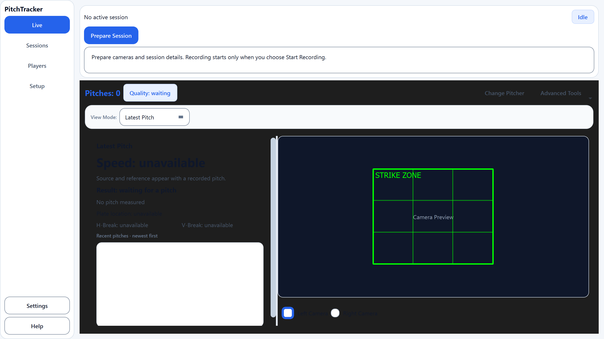
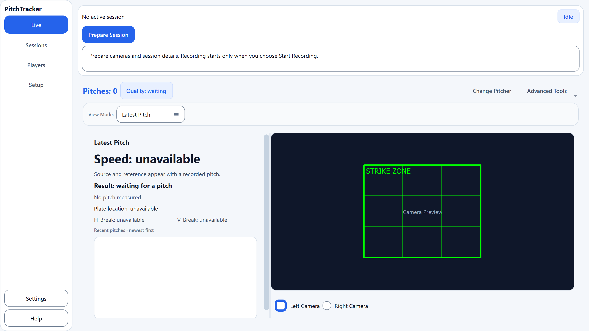
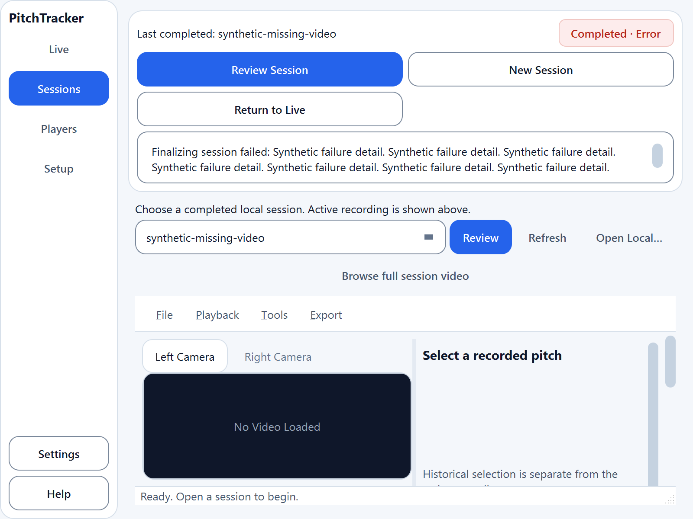

Windows platform plugin, current 200% display. Automated captures at 200%; the operator separately confirmed readability at Windows 125%/150%/200%, keyboard page navigation and clear Narrator control labels. Complete journeys and remaining assistive-technology checks are pending. No physical cameras or athlete data.


